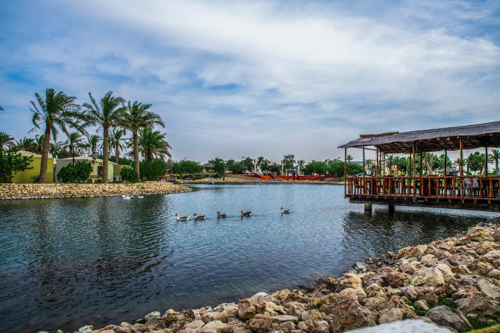
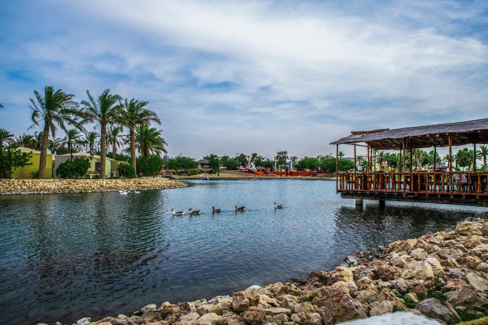

Al-Ahsa is the largest government in Saudi Arabia's Eastern Province.
Its history goes back more than 6000 years.
And, cause of the abundance of its water and the fertility of its lands,
Al-Ahsa become a renewed cultural scene.
The name refers to the sound of water underground.
It's also known as Al-Ahsa oasis
, Hajar
,Palm oasis
, and Palm country
.
Al-Ahsa is one of the largest oases in the world with world-renowned date palms.
Al-Ahsa is famous for its springs, and it is an agricultural oasis
where there are many palms estimated more than 2.5 million palms that produce more than 100,000 tons of dates every year.
The second largest production of Al-Ahsa yield after the palms dates
is Al-Ahsa rice, which is rich in iron and contains various benefits.
And, it's a summer plant that is grown in hot areas, like the Al-Ahsa region.
How can I visit Al-Ahsa city?
- Al-Ahsa Airport.
- Railway.
- Roads.
- Buses.
Famous tourist Landmarks:
- Uqair beach.
- Yellow lake.
- Springs.
- King Abdullah Environmental Park.
- Jawatha Park
- Al Ahsa National Park.
- Al-Qara mountain.
- Al-Arbaa mountain.
- Al-Ahsa Museum
- Al-Ahsa Heritage Village.
- Pottery factory.
- Qaisariya Souq.
- Ibrahim Palace.
- House of Allegiance.


 
